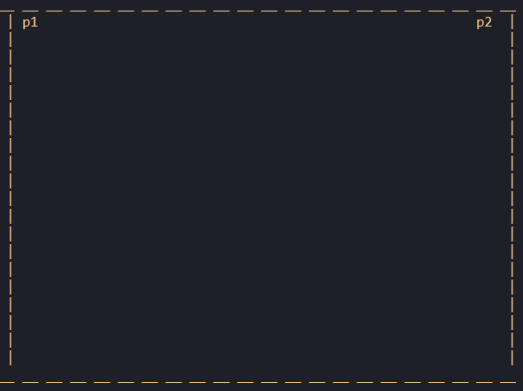
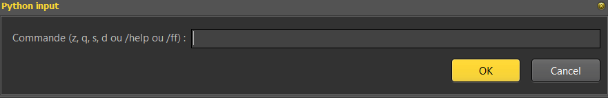
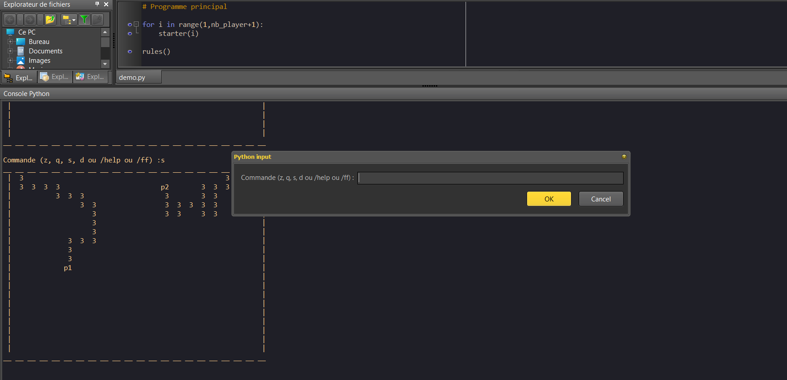

Le règles sont simples, il faut donc éliminer son adversaire en faisant sorte qu'il entre soit dans la trainé qu'il a laissé derrière lui, soit dans la sienne. La technique la plus commune est de passer d'une manière soudaine devant son adversaire
Tout d'abord vous allez jouer sur un plateau de cet aspect là :
Avant chaque partie, l'ordinateur vous rappeleras les règles, vous devrez entrer "ok" dans la console.
Toutes vos commande se feront dans l'input suivant:
Au fur et à mesure de la partie, le plateau s'afficheras dans l'espace de commande, il est conseiller de l'agrandir.
En pleine partie votre écran devrait ressembler à ceci par exemple:
Vous pouvez bouger l'input si besoin. Il est vivement conseillé de ne pas spammer sous peine de faire bugger le jeu. Vous pouvez tout de même aller assez vite.
En cas d'oublie de règles, vous pourrez toujours entrer /help (voir laPrésentation du progamme pour plus de détail, dans "liste des commandes utilisables").
Il est possible que le fichier affiche un message d'erreur au premier lancement, il suffit d'appuyer sur ok et de le relancer
Dernière information, le bot (noté p2) aura toujours la priorité sur vous. Dans une situation où vous allez tout les deux mourir "en même temps", il n'y aura pas d'égalité mais bien une défaire pour vous.
Le but de ce jeu est simple, survivre le plus longtemps possible jusqu'à la défaite de votre adversaire. Bon courage !